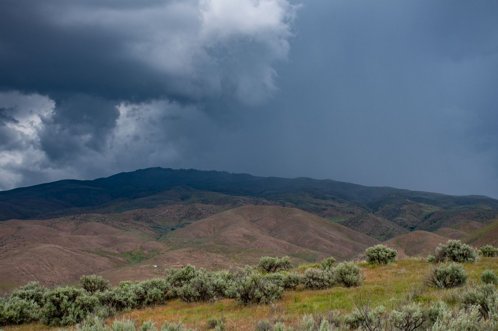

The operator · method, honesty, terms
The evaluation is flown as carefully as the aircraft.
Anyone can burn flares in a cloud. The scarce skill in this trade is the discipline around the burning: criteria fixed in advance, decisions logged either way, and a result reported with its uncertainty intact. That discipline is what this page describes.
The scientist
Dr Nathan Cole trained as an atmospheric scientist — a doctorate in cloud physics, then research years in a university cloud-physics group, flying instrumented aircraft through winter storms to measure the supercooled water this trade depends on. He holds a commercial pilot's licence with an instrument rating, and has run seeding operations in the Intermountain West since 2012: fourteen winters, 412 sorties, and five season reports that read “inconclusive” — delivered on time and in full, which he counts as the credential that matters.
The practice is deliberately small: Cole, a second pilot-meteorologist, and a data analyst. Programmes are taken one catchment at a time, because the evaluation design — not the flying — is the bottleneck, and an evaluation done carelessly is worse than none: it manufactures confidence the weather never issued.
How the seeding works, at practice level
Winter mountain clouds are full of droplets that stay liquid well below 0 °C — supercooled water with nothing to freeze on. Silver iodide's crystal structure resembles ice closely enough that droplets freeze on contact with its particles, grow at the expense of their liquid neighbours, and fall as snow. The agent is delivered two ways: aircraft flares burned along the cloud's upwind edge, and ground generators on ridge tops, burning an AgI solution in a propane flame so the terrain's own lift carries the plume into the deck. Neither creates a cloud, and neither works on one that lacks supercooled water — which is why the decision criteria, not the hardware, are the practice's core instrument. Silver from seeding is monitored in programme snowpack sampling and is measured at concentrations far below drinking-water guidelines; the sampling results are part of every season report.

How a season runs
Five stages;the paperwork is stage two, not stage five
Feasibility & climatology
Before any contract for flying: how often does this catchment actually produce seedable cloud? Sounding records, supercooled-water frequency, terrain, airspace. The output is a written go or no-go on the programme itself — and no is a deliverable this practice is paid for, at the same fee.
Protocol before the season
Decision criteria, the randomised seeding schedule, target/control definitions and the reporting template are agreed and signed before the first sortie. The randomisation is sealed in advance precisely so that nobody — operator or client — can lean on it after the weather is known.
Permits, airspace & filings
State weather-modification permits and reporting, federal notification, airspace coordination, landowner agreements for generator sites, environmental documentation. Unfashionable work, done before the fashionable kind, every season.
Operations, logged daily
Each morning's evidence is read against the five criteria and the decision recorded — go, no-go, or insufficient data — with the reasoning. Flares burn only on a logged GO. The log is the client's property and is delivered complete, including the aborts.
Evaluation & report
Target/control comparison and double-ratio analysis against the sealed protocol; the estimate printed with its interval; the no-go days accounted for. The report is delivered in the same format whether the interval clears zero or not — the fee was never contingent on the answer.
The honesty page
Attribution is the hard problem, and it is not close. Natural storm-to-storm variability in mountain snowfall is enormous next to any plausible seeding signal, so a season's extra snow — if any — hides inside weather that would have happened anyway. That is why serious programmes randomise, why physical measurements matter (the 2017 SNOWIE campaign in Idaho traced seeding signatures in radar and snowfall unambiguously — in specific storms, under specific conditions, which is exactly the point), and why the honest summary of the whole literature is: reported seasonal effects most often fall between 0 and about 15%, and they remain contested. Anyone who guarantees you rain is selling something. What this practice guarantees is the log: every criterion reading, every decision, every number with its interval attached.
Engagement terms, in plain language
- The evaluation fee is never contingent on a positive result. An evaluator paid only for good news will eventually manufacture some.
- No precipitation success fees — refused by policy. The practice is paid for operations and measurement, not for weather.
- Standby is billed as printed on the rate card, and unflown hours are never billed as flown. Season File 02 is the worked example.
- Null results are delivered in the same format as positive ones, and the client owns the complete operations log.
- The decline list is standing: hail suppression, rain-on-demand for events, and any programme — however funded — that will not carry an evaluation design.